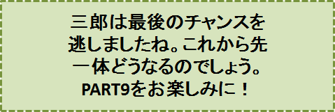

三郎と幸福のホテル-PART8-
『お庭番』の巻
笠原正雄
翌日、三郎は早く起きてホテルに赴（おもむ）きました。
気持よく晴れ上がった青空、樹々の緑がまぶしく目に映ります。町一番の大通りの両側には、純白の建物が沢山に建ち並び、朝日に輝いています。
早朝にぴったりの音楽が、どこからか流れてくるのでしょう、仕事場に向う人々は明るいリズムに合わせるように、軽やかに歩んでいます。
町の大通りの中央に、緑の木々が取り囲むように植えられた広場があります。広場には湖かなと思わせる大きな泉があって、幾つもの噴水が勢いよく大空に向って吹き出ています。そこでは小さな水鳥、大きな水鳥達が元気に飛び回って遊んでいます。
シオンの経営するホテルは、この広場に面して立っています。
三郎は、そのホテルを一目見て、驚きの余り初めは言葉も出ないぐらいでした。
“あぁ、あぁ、あぁ――、なんという大きな立派なホテルなんだ。こんな大きなホテルをシオンが経営しているとは、全く驚いたものだ……。しかも、このホテルに無料で宿泊させているって？”
こんな思いで、三郎の胸は一杯になります。
三郎は、胸の高まりを覚え走り出します。ホテルに近づくとホテルは更に大きく、大きーくなって目の前に立ちはだかってきます。三郎は、益々大きくなるホテルに圧倒されつつ走ります。
朝でしたので、泊まり客がホテルから続々出てきます。ある者は連れだって、ある者は一人で出てきます。
……全く、様々の人達がホテルから出てきます。
三郎は立止まりため息をつきながら眺めます。
若いサラリーマン風の男女もいます。歳をとって腰の曲がった老夫婦の姿も目に入ります。立派な髭の紳士もいます。自分と同じようにみすぼらしい身なりの男も出てくるではありませんか。
“よく流行っているのだなぁ。……しかし当然だよ。無料で、宿泊させているのだからなぁ”
三郎は、そう思いながらホテルの中に入りました。入った所は大きなホールになっていて、ドームのような天井から、豪華なシャンデリアが三郎を見詰めているかのように柔らかな光を投げかけています。
受付とかそういった場所は全く見当たりません。人々は誰にも断らないで空いた部屋に入っていきます。
幾日かの滞在を済ませた人々は、入ってきたときと同じように誰にも断らないで、大きく開け放たれた入り口から出て行きます。
三郎は中庭に出て、シオンに言われた通り、泉の水を汲んでは草花に水を与え始めました。
水をやりながらも、彼の目はホテルの建物を見回していました。
“何と大きなホテルだろう。こんなに大きなホテルなら、一人につきほんの少し宿泊料を払ってもらっても、これだけ多くの人々が泊まりに来るのだから、結構金持顔で暮らしていけるだろうに”
そう思っている間も、小さな子供達が沢山にやってきて遊び始めます。草の上で縄跳びをしたり、お相撲をとる子もいます。鬼ごっこをしたりボール遊びをする子もいます。
三郎はこれを見ると、少し憂鬱になりました。賑やか過ぎるとでも思ったのでしょう。
泉の水をやり終わると、三郎は考え込みます。
“あぁ……、このホテルは、私にとって全く分からないことばかりだ”
“どうしてこのホテルは無料なんだろう。そして又このホテルには、どうして子供達が自由に遊びにやってくることができるのだろう”
三郎が、水やりの仕事を終えてホテルを出たのは、正午をちょっと過ぎたころでした。
“たったこれだけの仕事で一日が終わるとは、本当、信じられないことだよなぁ……”
彼は、こんな独り言を言いながら、足どりも軽く町外れにあるシオンの家に帰ってきました。
三郎は、シオンを見るとにこにこしながら口を開きます。
「楽しいやり甲斐のある仕事を与えていただいて、本当にどう感謝していいのか……、言葉に表せない喜びです…」
「お仕事がお気に召したようで、私もほっとしましたわ」
「貴女があんなホテルを経営なさっているとは、今さらながら敬服いたします」
シオンは笑顔で
「いいえ。本当に小さなホテルですよ」
と、恥ずかしそうに答えます。
「いや、とんでもない！ 素晴らしく大きなホテルです。何もかも立派です。……で、どう考えてみても、あのホテルの宿泊代が無料であるということは……」
とここまで言うと、三郎は、ちょっとシオンの顔をうかがいながら、言葉を続けます。
「いかにも不合理なことと思います。……それに、あんなに子供達が中庭で遊びまわっては、せっかくの美しい庭が台無しになってしまいませんか。……本当に勿体ないことのように思えます」
「いいえ、勿体ないなどの話ではありません。あの庭に勢いよく吹き出る噴水や、美しく咲いている草花、尽きることなく水の湧き出る泉、子供達が何人も輪になって、やっと囲める大きな木がある限り、子供達はホテルの中庭にやって来ます」
シオンは優しい笑顔を顔に浮かべて続けます。
「大人達もそれを見て心の底から楽しくなるのですよ。もし子供達がやって来ないようになり、大人達が楽しくないようになったら、ホテルの存在は、恐らく無意味なものになってしまいますでしょう」
三郎は、このシオンの言葉にとても納得できないように、首を左右にゆっくり動かしながら口を開きます。
「あなたの仰ることは、どうも私には分かりかねます……。ところで、あのホテルは、あなた以外には誰も経営していらっしゃらないのですか」
「ええ、そうですよ。私以外のどなたも、あのホテルの経営に加わっておりません。誰も経営者になろうとしないものですから」
「ということは、なろうと思ってもなれないということですか」
「誰だってなれるのです！ でも、誰も面倒がってなろうとはしません。ここの町の人達は、自分自身のお仕事に一生懸命で、他人の仕事にまで割り込もうとはしないのですよ。
誰が何をやっていようと、私がどんな風にあのホテルを経営していようと、皆さん、全く知らぬ顔でまるで興味がないようです。そして道で会えば、ただにっこり笑って、
“流行（はや）っていますか！”
と、声を掛合うのが精一杯なんですよ」
三郎は、不思議そうな顔付で尋ねました。
「では、あのホテルは、誰か他に経営する人があってもいいのですか？ 貴女以外に……」
「勿論ですとも！」
シオンは珍しく大きな声で言った後続けます。
「誰でもあのホテルの経営者になることができますよ……」
「でも経営者になるには何か手続きがいるでしょう」
「何もいりません！ ただ、あのホテルの経営者になることを決心しさえすれば、誰でもなることが出来るのです」
「なるほど！」
三郎は大きく頷いて、すっかり納得したという態度を見せました。
「でも、私の所へ今迄、誰もそういうことを言って参りません。この町の人達は、自分自身のお仕事を一生懸命やっていらっしゃいますから、私がホテルの経営を始めてからこの方、まだ一度もそんなことを申し出てくる人はありませんでした」
彼はふぅーと溜息をつきました。
“つまり、この女は、水やりの仕事を黙って続けろ、と言うのだろうなぁ。この仕事に生き甲斐を見出しなさい、と言うのだろうなぁ……”
三郎は、何とかしてあの大きなホテルの経営者になりたいものと思いましたが、どう話し出していいのか、その糸口を掴むことが出来ませんでした。
その日はホテルの話を止(や)めねばなりませんでしたし、その後も三郎は、ホテルの経営者になりたいということを、シオンに打ち明けることはありませんでした。
三郎は毎日ホテルに通います。
草花がいつも生き生きと咲いているようにと、泉の水を汲んではかけるという仕事は、ほんの少しの時間があれば済んでしまいます。この後、芝生の水撒きの仕事を済ませると、三郎はホテルの中を歩き回って観察します。そしてその度に彼は、こんなことを思わずにはいられません。
“とにかくこのホテルは、余程有名な建築家が建てたものだろう。何もかもが調和を保って、心の底から感動できるように造り上げられている……。このホテルは、古代ギリシャの人達が愛したというハルモニア、シンメトリーの結晶さ。全く見事な建物だ。
全体が大理石のように美しく輝いている。部屋は一つ一つが大きくゆったりしていて、中に置いてあるベッドや鏡台、机や椅子は、ちょっとした芸術作品、そんな感じの立派なものばかりだ”
三郎はふうーと、大きく息を吐きます。
“けれどこのホテルについて一番不思議で、また驚かねばならないことは、その広さだろう。そして大きさだろう。一体どこにホテルの端があるのだろう？外から見てもちょっと見当がつかない程大きい。中に入れば更に大きく感じられる。隣の部屋には必ず隣の部屋がある。そして、どこまでもどこまでも部屋が続いていて、決して尽きることはない。”
三郎は、毎日、こんな思いを胸に仕事をしていました。
三郎とシオンとは、とにかく長い間一緒に暮らしていました。
そして、二人の間には、一方において深い溝がありましたが、他方において温かいものが次第に醸されてきました。
ある日三郎は、シオンから自分の婿になってくれるよう、切に申し込まれました。
彼は、その温かいものが、ついに一緒に溶けあって、二度と再び離れることがないだろうと思いました。彼の胸は大きな喜びで一杯になります。
「シオン！私の方から申し込みたいと思っていたのに……、本当に身に余る光栄そして大きな喜びだよ」
胸の底からあふれ出てくる喜びを、全身に表して、優しい言葉をシオンに投げかけます。
シオンは、三郎の言葉にすっかり朗らかになって、部屋中を踊るような軽い足どりで歩き回っています。
三郎はその姿をやはり嬉しそうに見ていましたが、やがて、あのホテルのことが彼の心に浮かんできて、尋ねずにはいられなくなりました。
「だがね、シオン。私とお前とが結婚してからも、この家に住み続けてホテルに通うことになるのかね」
彼女は踊るような足取りで歩むことをぴたっと止めて、きっぱりした口調で言います。
「ええ、勿論そうですよ！」
三郎は、悲観せずにはいられませんでした。
「でも、私達があのホテルの一室に住めば、一々あのホテルに通わないで済むじゃないか。ねぇ、シオン！」
「勿論、それでもよろしいですが、そうなると却って面倒なことが起こるものですよ。
ホテルというものは、あくまでホテルであって、一生そこで暮らすようには、造られていないのですから。
ホテルの一室とこちらの家とを比べますと、それはやはり、こちらの方が住みよくまた便利にこしらえてあるのではありませんか」
ホテルのことについては、これまで万事、シオンと意見が食い違っていました。今、結婚の約束をしたばかりなので、このホテルの話は避けたかったのでしたが、もし、ここで今、はっきりしたことを決めておかないと、一生後悔して暮らさねばならないようになるかもしれない……、と思うと、やはりホテルの話を出さずにはいられませんでした。
三郎は、少し語気を強めて言います。
「……それに、言っておくが、あのホテルは、やはり宿泊代を、少しは貰うべきだよ！」
「とんでもございませんわ！」
シオンは、はっきり断言するような口調で言います。
三郎は、彼女がいつもの態度を頑（かたく）なに守っているのを知ると、更に語気を強くして言います。
「いつもお前はそんなことを言う！ なぁ、シオン、よく考えてみると、ホテルの床を拭いたり芝生が枯れないように水を撒（ま）いたりするだけでは、少しもホテルの経営者らしくないばかりか、こんな状態では、全くアルバイト仕事をしているようなものだよ」
「ホテルの経営者らしい態度は、私なりにしっかりとって参りましたよ。貴方がお気づきにならなかっただけですわ……」
シオンは自信に満ちて答えます。
「じゃシオン、聞くけれど、あのホテルに泊まっていく誰が、経営者たる貴女に敬意を表したかね……。あの立派なホテルを無料で泊めておいてもらいながら、シオンに、一言の挨拶もしないで出て行き、また泊まったりしているではないか。いつになったら、彼らは我々に敬意を表してくれるのかね？」
この言葉にシオンは静かに答えます。
「貴方は、彼等の敬意の気持が態度にはっきり表れない限り、信ずることが出来ないのでしょ……。私達と彼等とが、お互いに心の中で尊敬し合っていても……」
「ああ、とにかく婚約したからには、私にホテルの経営を任してくれないか。これは夫になる私の、心の底からの願いだよ」
三郎は、今まで経験したこともない程気が立ってくるのを、どうしても抑えることが出来ませんでした。
「……私は、明日からでもホテルの経営に乗り出し、宿泊代を少しづつでも取ることにする！ でないと……」
ここでシオンが三郎の言葉を遮るように言います。
「いくら仰っても、それだけは受け入れられません」
「ああ、何という強情な女なんだ！」
三郎は、思わず大きな声を出して絶叫します。顔は真っ赤になりその目は異様に光り、どうにもならない程苛立っていることを明白に示していました。興奮を抑えきれないのでしょう、上ずった声で
「シオン！ 考え直してくれないか。小っぽけな普通のホテルの宿泊代に比べてみても、ほんの僅か、10分の１いや100分の１の宿泊代を取ろうというだけだよ」
と、シオンに言葉を投げかけます。
「いえ、ほんの少しでも取ることは出来ませんわ」
「ああ、そんなことなら、シオン！お前にもはや用はない。私は、お前との婚約を、たった今、交（か）わしたばかりだけれど、取消すことにするよ。あっさり取り消す！」
シオンは、三郎の言葉に非常に驚いた様子で、彼の顔を見詰めました。その態度に、三郎は一層苛立(いらだ)ちます。
「はっきり、婚約を取り消す。お前ほど強情で、嫌な奴はいないのだから！」
三郎は言い終わって、
“しまった！”
と思ったのでしたが、もはや取り返しのつかぬ失敗をしてしまったことを悟りました。
と申しますのも、ホテルの経営者のシオンの姿は、一瞬にしてどこにも見当らず、そのかわりに部屋の片隅であの“つまらぬ奴”が、腕組をして立っていたからです。
“これが最後の機会だったのに”
三郎は思わず溜息をつきました。
老人は、ずっと前シオニー村の畑で初めて会った時と同じ恰好で、口元にはやはり絶えず微笑を浮かべて立っています。
「三郎！ これで三度目だったね。元気に暮らすがよい！」
老人は、ただ一言、こう言っただけで彼の側を去っていきました。
♪♪♪♪コーヒーブレイク♪♪♪♪
